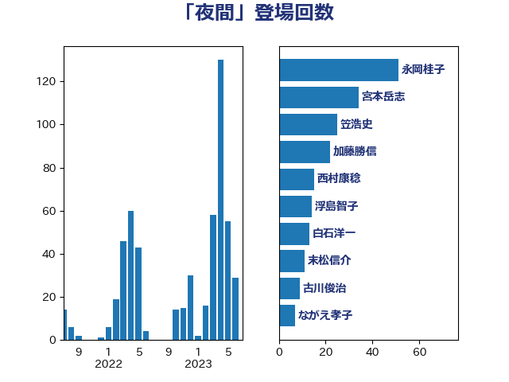

単語「夜間」

| 永岡桂子 | 自由民主党 | 51 回 |
| 宮本岳志 | 日本共産党 | 34 回 |
| 笠浩史 | 無所属 | 25 回 |
| 加藤勝信 | 自由民主党 | 22 回 |
| 西村康稔 | 自由民主党 | 15 回 |
| 浮島智子 | 公明党 | 14 回 |
| 白石洋一 | 立憲民主党 | 13 回 |
| 末松信介 | 自由民主党 | 11 回 |
| 古川俊治 | 自由民主党 | 9 回 |
| ながえ孝子 | 無所属 | 7 回 |
| 東徹 | 日本維新の会 | 6 回 |
| 斉藤鉄夫 | 公明党 | 6 回 |
| 岸田文雄 | 自由民主党 | 5 回 |
| 小倉將信 | 自由民主党 | 5 回 |
| 伊藤岳 | 日本共産党 | 5 回 |
| 中条きよし | 日本維新の会 | 5 回 |
| 一谷勇一郎 | 日本維新の会 | 5 回 |
| 阿部弘樹 | 日本維新の会 | 4 回 |
| 舩後靖彦 | れいわ新選組 | 4 回 |
| 紙智子 | 日本共産党 | 4 回 |
| 泉田裕彦 | 自由民主党 | 4 回 |
| 山際大志郎 | 自由民主党 | 4 回 |
| 山本太郎 | れいわ新選組 | 4 回 |
| 天畠大輔 | れいわ新選組 | 4 回 |
| 伊佐進一 | 公明党 | 4 回 |
| 高橋光男 | 公明党 | 3 回 |
| 鈴木貴子 | 自由民主党 | 3 回 |
| 芳賀道也 | 国民民主党 | 3 回 |
| 森屋隆 | 立憲民主党 | 3 回 |
| 木村英子 | れいわ新選組 | 3 回 |
| 打越さく良 | 立憲民主党 | 3 回 |
| 山崎正恭 | 公明党 | 3 回 |
| 宮本徹 | 日本共産党 | 3 回 |
| 吉田とも代 | 日本維新の会 | 3 回 |
| 倉林明子 | 日本共産党 | 3 回 |
| 伊波洋一 | 無所属 | 3 回 |
| 鈴木庸介 | 立憲民主党 | 2 回 |
| 遠藤良太 | 日本維新の会 | 2 回 |
| 谷公一 | 自由民主党 | 2 回 |
| 西岡秀子 | 国民民主党 | 2 回 |
| 簗和生 | 自由民主党 | 2 回 |
| 竹谷とし子 | 公明党 | 2 回 |
| 空本誠喜 | 日本維新の会 | 2 回 |
| 石川香織 | 立憲民主党 | 2 回 |
| 田村憲久 | 自由民主党 | 2 回 |
| 深澤陽一 | 自由民主党 | 2 回 |
| 池田佳隆 | 自由民主党 | 2 回 |
| 森山裕 | 自由民主党 | 2 回 |
| 林芳正 | 自由民主党 | 2 回 |
| 村田享子 | 立憲民主党 | 2 回 |
| 新垣邦男 | 立憲民主党 | 2 回 |
| 小田原潔 | 自由民主党 | 2 回 |
| 小宮山泰子 | 立憲民主党 | 2 回 |
| 友納理緒 | 自由民主党 | 2 回 |
| 佐藤英道 | 公明党 | 2 回 |
| 中川康洋 | 公明党 | 2 回 |
| 中島克仁 | 立憲民主党 | 2 回 |
| たがや亮 | れいわ新選組 | 2 回 |
| 齋藤健 | 自由民主党 | 1 回 |
| 高橋千鶴子 | 日本共産党 | 1 回 |
| 高木真理 | 立憲民主党 | 1 回 |
| 鎌田さゆり | 立憲民主党 | 1 回 |
| 輿水恵一 | 公明党 | 1 回 |
| 自見はなこ | 自由民主党 | 1 回 |
| 竹詰仁 | 国民民主党 | 1 回 |
| 穀田恵二 | 日本共産党 | 1 回 |
| 福重隆浩 | 公明党 | 1 回 |
| 神谷裕 | 立憲民主党 | 1 回 |
| 神津たけし | 立憲民主党 | 1 回 |
| 石川大我 | 立憲民主党 | 1 回 |
| 石井啓一 | 公明党 | 1 回 |
| 矢倉克夫 | 公明党 | 1 回 |
| 畦元将吾 | 自由民主党 | 1 回 |
| 田村智子 | 日本共産党 | 1 回 |
| 田中健 | 国民民主党 | 1 回 |
| 熊谷裕人 | 立憲民主党 | 1 回 |
| 浜田靖一 | 自由民主党 | 1 回 |
| 浅野哲 | 国民民主党 | 1 回 |
| 河野義博 | 公明党 | 1 回 |
| 池下卓 | 日本維新の会 | 1 回 |
| 永井学 | 自由民主党 | 1 回 |
| 櫻田義孝 | 自由民主党 | 1 回 |
| 森田俊和 | 立憲民主党 | 1 回 |
| 森山浩行 | 立憲民主党 | 1 回 |
| 松本剛明 | 自由民主党 | 1 回 |
| 本村伸子 | 日本共産党 | 1 回 |
| 日下正喜 | 公明党 | 1 回 |
| 斎藤アレックス | 国民民主党 | 1 回 |
| 後藤茂之 | 自由民主党 | 1 回 |
| 川田龍平 | 立憲民主党 | 1 回 |
| 川合孝典 | 国民民主党 | 1 回 |
| 島村大 | 自由民主党 | 1 回 |
| 岸真紀子 | 立憲民主党 | 1 回 |
| 山添拓 | 日本共産党 | 1 回 |
| 山本左近 | 自由民主党 | 1 回 |
| 山本博司 | 公明党 | 1 回 |
| 山下芳生 | 日本共産党 | 1 回 |
| 尾身朝子 | 自由民主党 | 1 回 |
| 尾崎正直 | 自由民主党 | 1 回 |
| 小野泰輔 | 日本維新の会 | 1 回 |
| 小林茂樹 | 自由民主党 | 1 回 |
| 宗清皇一 | 自由民主党 | 1 回 |
| 太栄志 | 立憲民主党 | 1 回 |
| 大野敬太郎 | 自由民主党 | 1 回 |
| 大岡敏孝 | 自由民主党 | 1 回 |
| 堀場幸子 | 日本維新の会 | 1 回 |
| 城井崇 | 立憲民主党 | 1 回 |
| 國場幸之助 | 自由民主党 | 1 回 |
| 和田政宗 | 自由民主党 | 1 回 |
| 吉田統彦 | 立憲民主党 | 1 回 |
| 吉川沙織 | 立憲民主党 | 1 回 |
| 古屋範子 | 公明党 | 1 回 |
| 加田裕之 | 自由民主党 | 1 回 |
| 佐々木さやか | 公明党 | 1 回 |
| 仁比聡平 | 日本共産党 | 1 回 |
| 仁木博文 | 無所属 | 1 回 |
| 井坂信彦 | 立憲民主党 | 1 回 |
| 中野英幸 | 自由民主党 | 1 回 |
| 中川貴元 | 自由民主党 | 1 回 |
| 三浦信祐 | 公明党 | 1 回 |